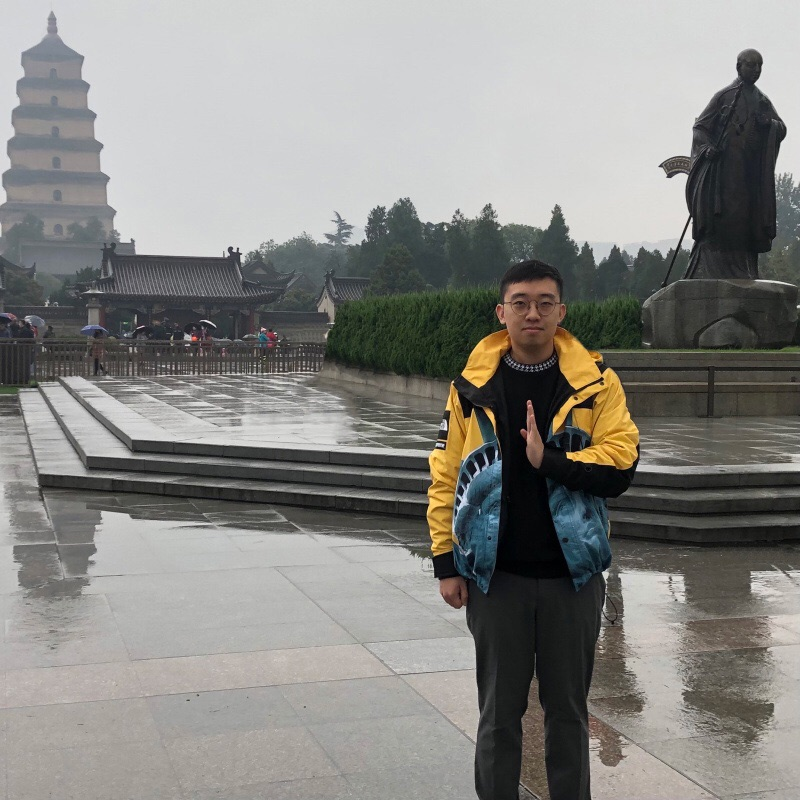

Zizheng Liu is a PhD student in the Department of Computer Science at Purdue University, supervised by Prof. Chunyi Peng.
He received his M.S. degree in Computer Science from Columbia University and his B.E. degree in Computer Science and Technology from Northeastern University (Shenyang).